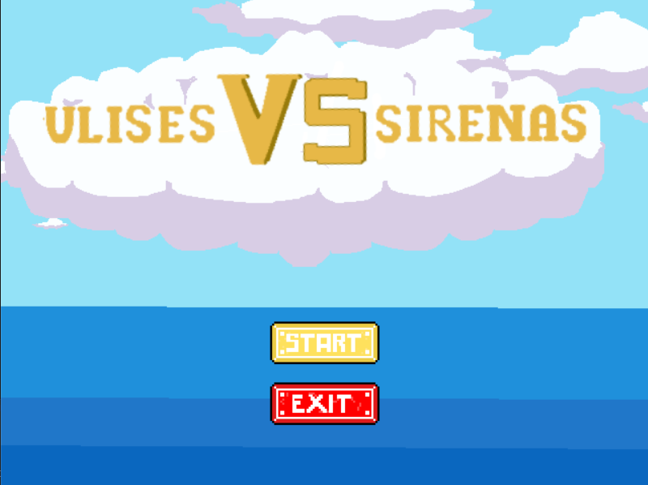

|

|
Ulises, el rey de Itaca, debera dejar su pueblo atras para combatir en la guerra de Troya.
Al salir triunfante de ella, con gran alivio por estar vivo, emprende viaje hacia su hogar.
Pero es, inesperadamente, emboscado por las viles mujeres mitad pajaro, y con sus maravillosos cantos hipnotizantes, intentaran acabar con su vida.
Tu deber en este juego, es ser Ulises y esquivar los maleficos cantos de las sirenas ¿Seras digno de cumplir esta tarea?
|